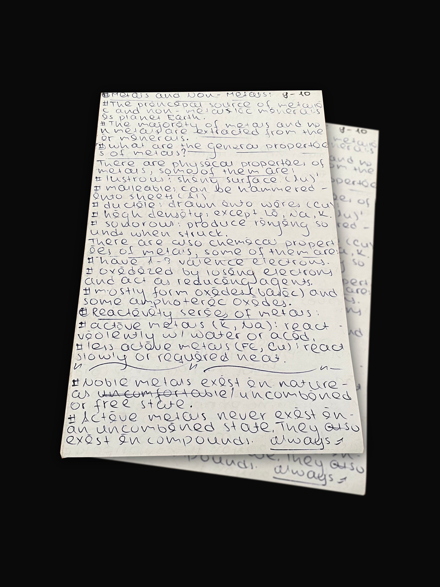
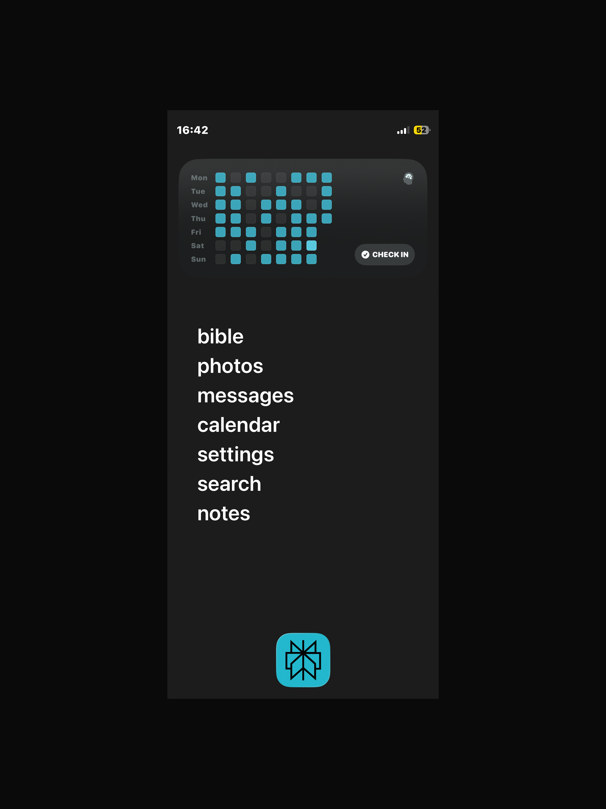

systems are the methods i apply to my everyday life to keep me on top of my academics and productivity. to the right is the note-taking system that helped me get good grades throughout high-school.

ex: chemistry notes from sophomore year
it's called blurting, you may have heard of it before from other creators (gohar's guide) and it's been a gamechanger. my academic performance was subpar at best during my middle school years due to the way i took notes, they were messy, unorganized, and my handwriting was just straight up illegible.
blurting fixed that, and the idea is simple. read your notes for 30 minutes, then write down everything you remember on paper. reread to fill any memory gaps until you know it perfectly. this method transformed my academic performance starting freshman year. if you are in high school, or even in uni, i highly encourage you to try it. also, i've started to use field notes (the heavy duty edition) as one of my main workbooks, will see how it works in the long run.
to be more productive with my time, i switched my phone from a colorful, dopamine-filled homescreen to a minimalist, dumb-phone setup. it has worked wonders for me ever since i've started using it in my everyday life. i also use apps like screenzen to help me restrict social media during certain hours of the day.
before this, i was plagued by the need to doom-scroll every waking minute of the day, after the change, however, i've slowly but surely started to do away with that habit. and it only takes around 20 mins to set up. i also highly encourage you to use this setup as your daily-driver. obviously this isnt the only productive tool i use, but it's by far the most important.

dumbphone setup from July 2026
copyright © 2026 David Busha. all rights reserved.